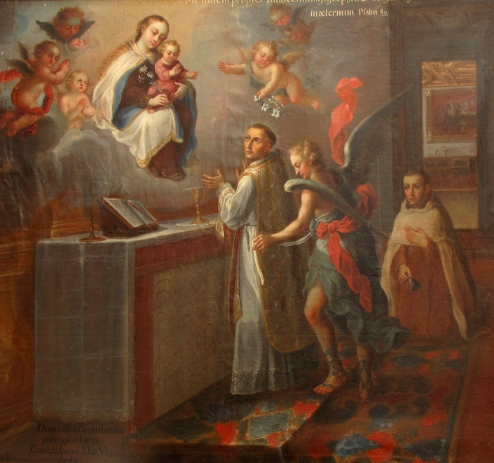

PRÓLOGO

São João da Cruz foi um homem admirável que irradiava mistério e dignidade. Sua aparente sobriedade não conseguia ocultar a luz que brotava de seu coração, por suas palavras, no lirismo de seus poemas e na radicalidade de sua postura doutrinal e de seu viver vocacionado.
Seus contemporâneos diziam que “DEUS NOSSO SENHOR lhe concedeu um Santo Ser, que todos respeitavam”. Foi um contemplativo eficiente e dedicado, inimigo da evidência, de altos cargos e arredio ao trato social. Um homem simples, que vivia do trabalho e para o trabalho, e com uma paixão belíssima e incomensurável por DEUS.
Revestido de uma modéstia impressionante e da força de um silêncio impenetrável sobre os seus sentimentos, manteve oculto o mundo interior de sua história e o curso de sua existência. Ele sempre se recusou revelar os seus segredos e os momentos íntimos de sua vida.
Era com muita dificuldade que seu irmão Francisco conseguia saber algo sobre o seu trabalho, sobre o desempenho e a grandeza de seu coração.
Uma vocação religiosa percorreu visivelmente os seus dias, do começo ao fim, em profundidade e amplitude: “a vocação religiosa contemplativa”. E faz-se importante ressaltar, que existia a “contemplação” no seu significado mais concreto, de atração radical e busca de DEUS, que realiza inteiramente a concentração do ser e o viver de uma pessoa de fé, em comunhão com o próprio SENHOR, a partir do SENHOR, com as pessoas e com as coisas. Frei João foi um contemplativo em razão da graça, da natureza, do especial zelo e de sua dedicação.
Junto com Madre Teresa de Jesus (Santa Teresa D’Ávila), realizaram de modo notável a Reforma do Carmelo, fazendo com que a contemplação, as orações e a leitura bíblica, fossem mais cultivadas e buscadas com mais interesse e consciência, do que o brilho do conhecimento, a busca de postos mais elevados e a evidência pessoal. Criaram a Ordem Carmelita Descalço, convidando a Igreja a um mais fervoroso e devotado amor ao SENHOR.
A sua Obra, embora não seja tão extensa, continua sendo ponto de referência e citações constantes, em variadas exposições do sentimento e das iniciativas cristãs. Os livros, poemas e romances escritos por Frei João, são de uma densidade amorosa tão cativante, que convida todos os corações, mesmo os mais rebeldes, a cultivar o Amor a DEUS.
Apenas como aperitivo, objetivando despertar o interesse do leitor na Obra do Místico Carmelita, reproduzimos a seguir “um argumento” que ele apresenta na “Educação do Amor” como alicerce de raciocínio e norma de vida:
“Para tratar do desnudamento ativo da potência que é à vontade, para entendê-la e formá-la na virtude da caridade de DEUS, não encontrei autoridade mais conveniente que a escrita do Deuteronômio, capítulo 6 (versículo 5), onde Moisés diz: Amará ao SENHOR teu DEUS com todo o teu coração, com toda a tua alma e com toda a tua força. Nisto está contido tudo o que o homem espiritual deve fazer, e o que, aqui, lhe tenho que ensinar, para que verdadeiramente chegue a DEUS por união de vontade, por meio da caridade. Porque nela se determina ao homem que todas as potências, apetites, ações e afetos de sua alma sejam empregues em DEUS, de modo que toda a capacidade e força da alma não sirvam senão para isto, conforme ao que disse Davi: Minha força eu guardarei para TI”. (Sl 58, 10)(3 S 16,1)
Com a intenção de ajudar a divulgar a obra deste admirável Místico e Mestre do Cristianismo, o APOSTOLADO DOS SAGRADOS CORAÇÕES, baseado no livro do Padre Federico Ruiz, “MÍSTICO E MESTRE SÃO JOÃO DA CRUZ”, editado pela Editora Vozes, aqui coloca em evidência as principais partes do relato original da vida de Frei João da Cruz, escrito logo depois de sua morte, em Março de 1592, por seu irmão Francisco. Foram utilizadas também informações extraídas dos livros: “OBRAS COMPLETAS DE SAN JUAN DE LA CRUZ” escrito por José Vicente Rodriguez e “SAN JUAN DE LA CRUZ – Pensamiento y Poesia”, escrito por Afonso Mendez Plancarte.
APOSTOLADO DOS SAGRADOS CORAÇÕES
http://www.apostoladosagradoscoracoes.com/